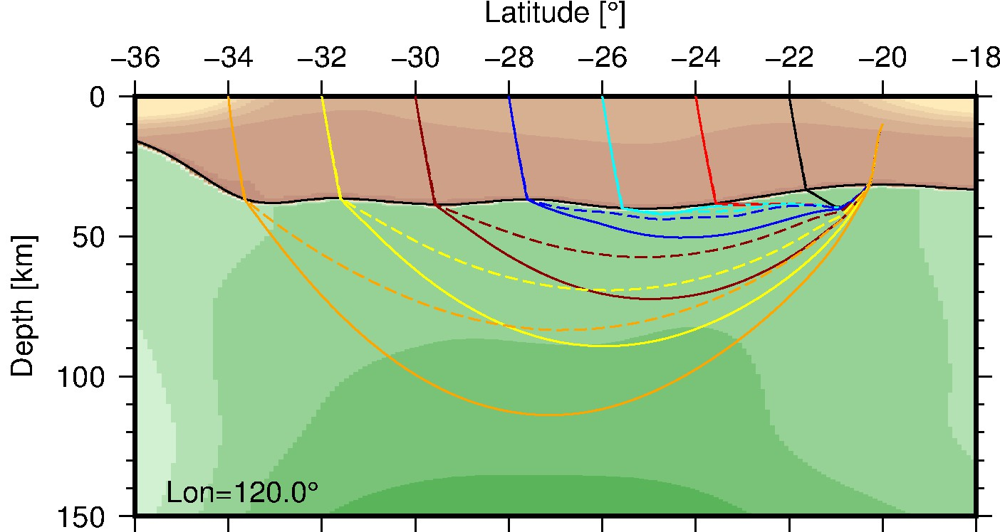

Pn Raypath in 1D and 3D¶
Description: The Pn raypath in the 3-D model and the 1-D ak135 model.
Weijia Sun and B. L. N. Kennett, 2016, Uppermost mantle P wavespeed structure beneath eastern China and its surroundings, Tectonophysics, 683, 12–26.
The 3-D Fast Marching Code is used to calculate the raypath in 1-D and 3-D media for comparison. The code could be downloaded from http://rses.anu.edu.au/seismology/soft/fmmcode/.
{kind=link}
1 2 3 4 5 6 7 8 9 10 11 12 13 14 15 16 17 18 19 20 21 22 23 24 25 26 27 28 29 30 31 32 33 34 35 36 37 38 39 40 41 42 43 44 | #!/bin/sh
gmtset FONT_ANNOT_PRIMARY=10p,Helvetica,black
gmtset FONT_ANNOT_SECONDARY=10p,Helvetica,black
gmtset FONT_LABEL=10p,Helvetica,black
gmtset FONT_LOGO=10p,Helvetica,black
gmtset FONT_TITLE=10p,Helvetica,black
# convert xyz to grd
gmt xyz2grd grid2dvns120.0.z -Gtemp.grd -I231.000000+/191.000000+ -ZRT -R-44.189374/-9.344375/-0.839499/191.060499
gmt grdsample temp.grd -Gout.grd -I0.100000/0.100000 -nb
# plot velocity
gmt makecpt -Ccm3.cpt -T4.5/8.5/0.00001 > colors.cpt
gmt grdimage out.grd -JX10c/-5c -K -P -Ccolors.cpt -R-36.000000/-18.000000/0.000000/150.000000 -BWsNe -Bxa2f2+l'Latitude [\260]' -Bya50f10+l'Depth [km]' > ns120.0.ps
# plot interface
gmt psxy -JX10c/-5c -R-36.000000/-18.000000/0.000000/150.000000 -K -O -W0.5p intns120.0.xy >> ns120.0.ps
# plot rays
gmt psxy -JX10c/-5c -R-36.000000/-18.000000/0.000000/150.000000 -K -O -W0.5p,black 3d/rays.gmt.2 >> ns120.0.ps
gmt psxy -JX10c/-5c -R-36.000000/-18.000000/0.000000/150.000000 -K -O -W0.5p,red 3d/rays.gmt.4 >> ns120.0.ps
gmt psxy -JX10c/-5c -R-36.000000/-18.000000/0.000000/150.000000 -K -O -W0.5p,cyan 3d/rays.gmt.6 >> ns120.0.ps
gmt psxy -JX10c/-5c -R-36.000000/-18.000000/0.000000/150.000000 -K -O -W0.5p,blue 3d/rays.gmt.8 >> ns120.0.ps
gmt psxy -JX10c/-5c -R-36.000000/-18.000000/0.000000/150.000000 -K -O -W0.5p,darkred 3d/rays.gmt.10 >> ns120.0.ps
gmt psxy -JX10c/-5c -R-36.000000/-18.000000/0.000000/150.000000 -K -O -W0.5p,yellow 3d/rays.gmt.12 >> ns120.0.ps
gmt psxy -JX10c/-5c -R-36.000000/-18.000000/0.000000/150.000000 -K -O -W0.5p,orange 3d/rays.gmt.14 >> ns120.0.ps
gmt psxy -JX10c/-5c -R-36.000000/-18.000000/0.000000/150.000000 -K -O -W0.5p,black,- 1d/rays.gmt.2 >> ns120.0.ps
gmt psxy -JX10c/-5c -R-36.000000/-18.000000/0.000000/150.000000 -K -O -W0.5p,red,- 1d/rays.gmt.4 >> ns120.0.ps
gmt psxy -JX10c/-5c -R-36.000000/-18.000000/0.000000/150.000000 -K -O -W0.5p,cyan,- 1d/rays.gmt.6 >> ns120.0.ps
gmt psxy -JX10c/-5c -R-36.000000/-18.000000/0.000000/150.000000 -K -O -W0.5p,blue,- 1d/rays.gmt.8 >> ns120.0.ps
gmt psxy -JX10c/-5c -R-36.000000/-18.000000/0.000000/150.000000 -K -O -W0.5p,darkred,- 1d/rays.gmt.10 >> ns120.0.ps
gmt psxy -JX10c/-5c -R-36.000000/-18.000000/0.000000/150.000000 -K -O -W0.5p,yellow,- 1d/rays.gmt.12 >> ns120.0.ps
gmt psxy -JX10c/-5c -R-36.000000/-18.000000/0.000000/150.000000 -K -O -W0.5p,orange,- 1d/rays.gmt.14 >> ns120.0.ps
# label
echo -35.340000 145.000000 Lon=120.0'\260' > text.d
gmt pstext text.d -J -R -K -O -F+f10p+jBL >> ns120.0.ps
# end
gmt psxy -J -R -O -T >> ns120.0.ps
gmt psconvert -A -P -Tj ns120.0.ps
|